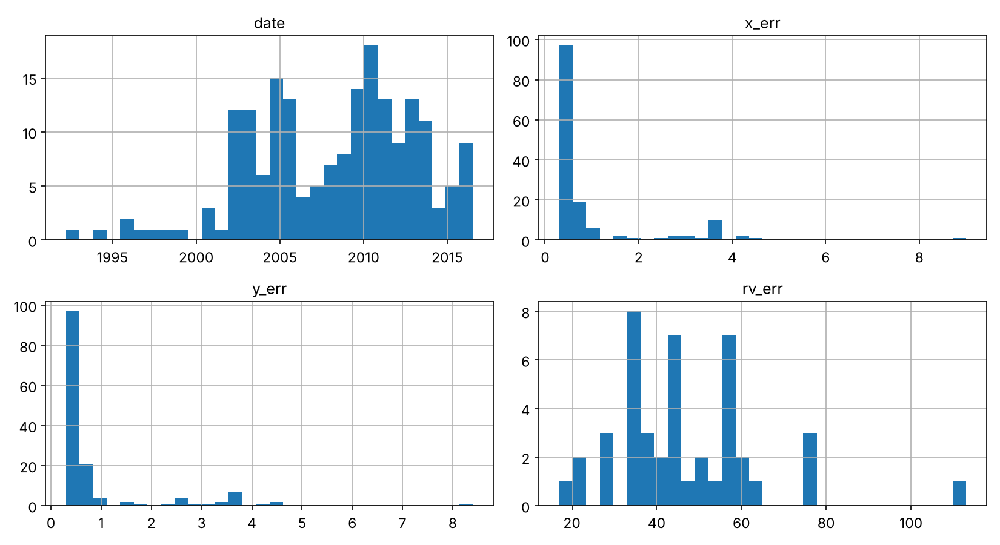
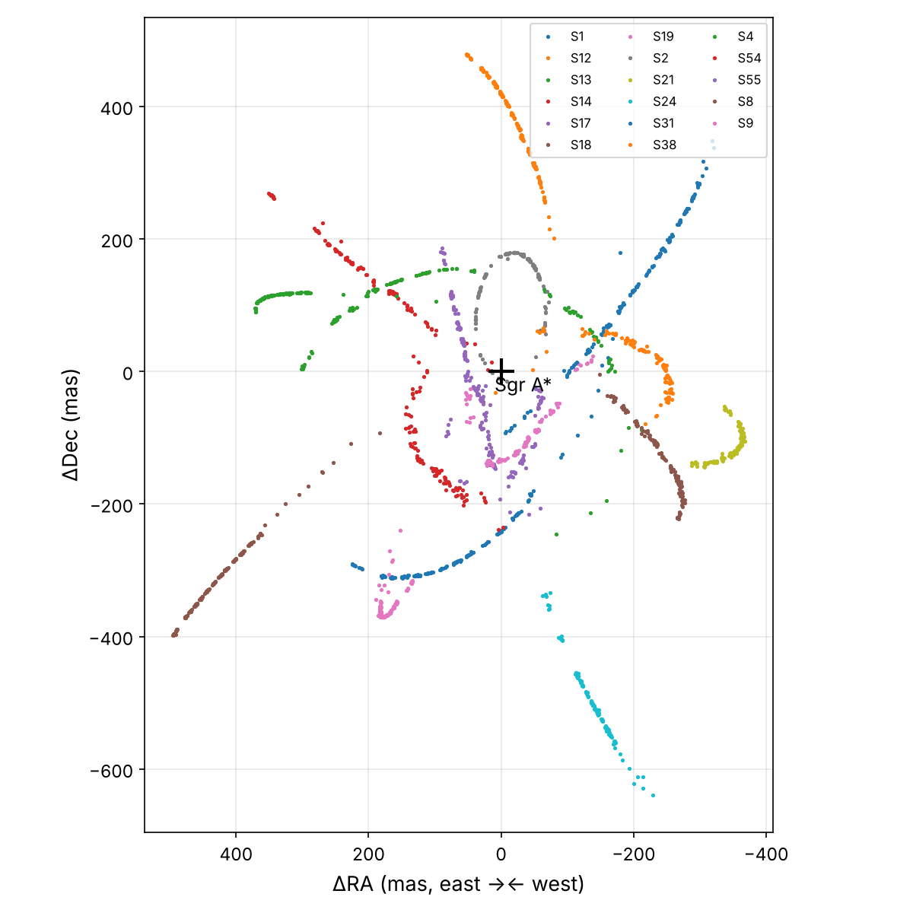
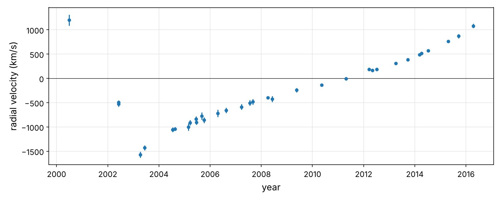
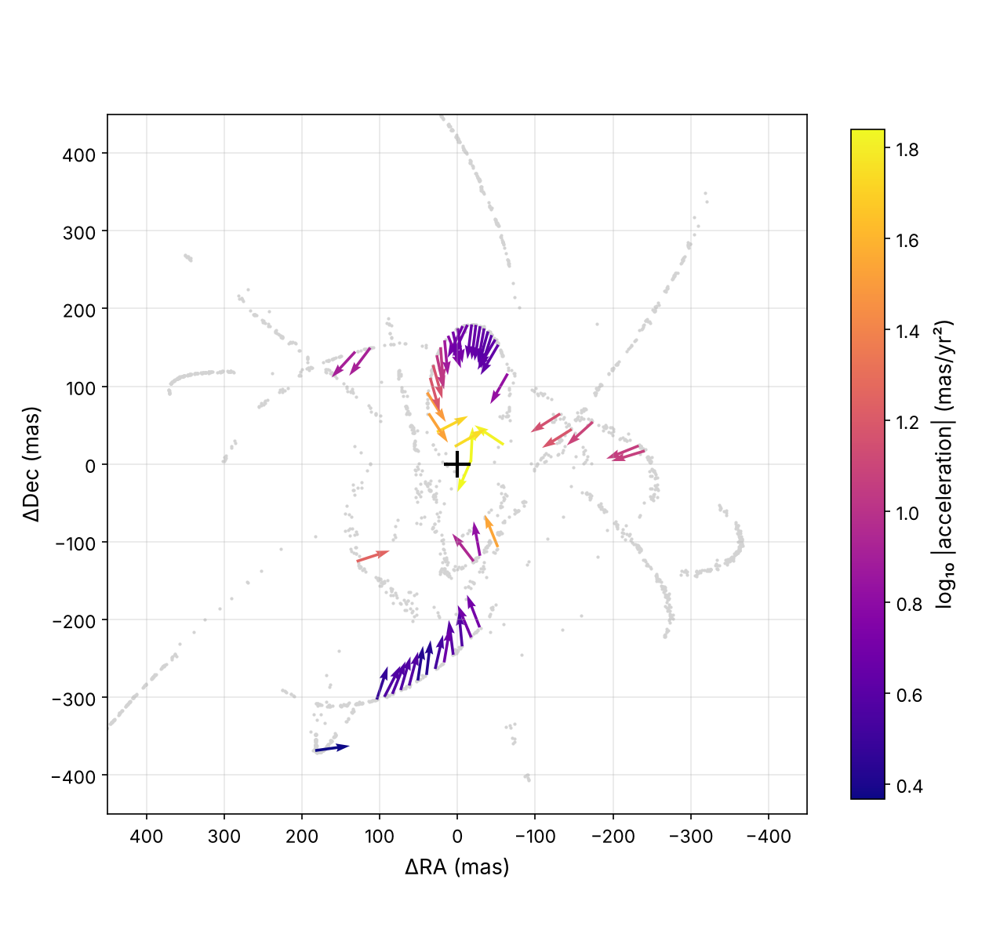
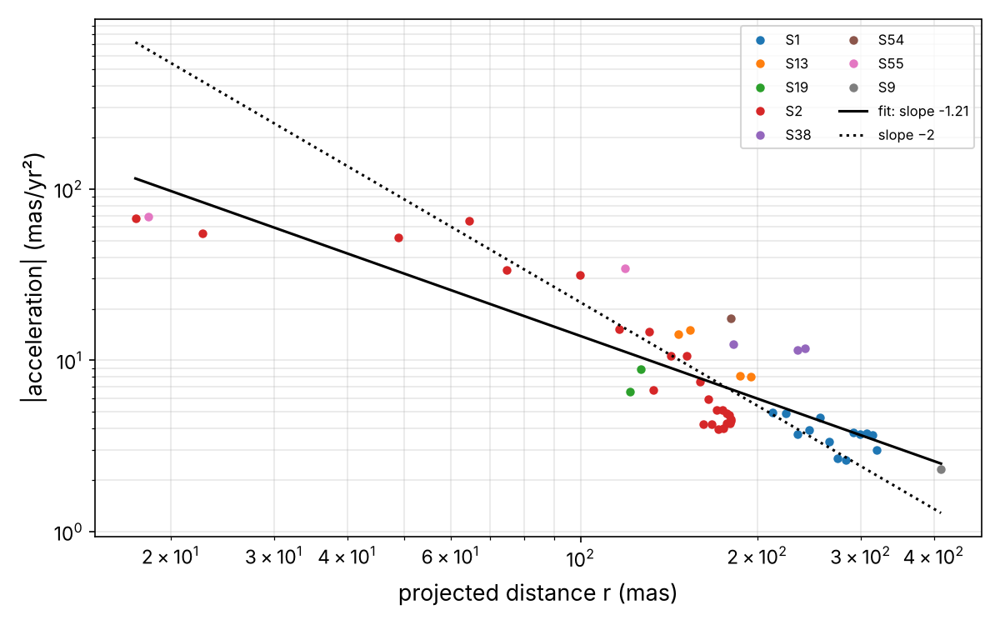
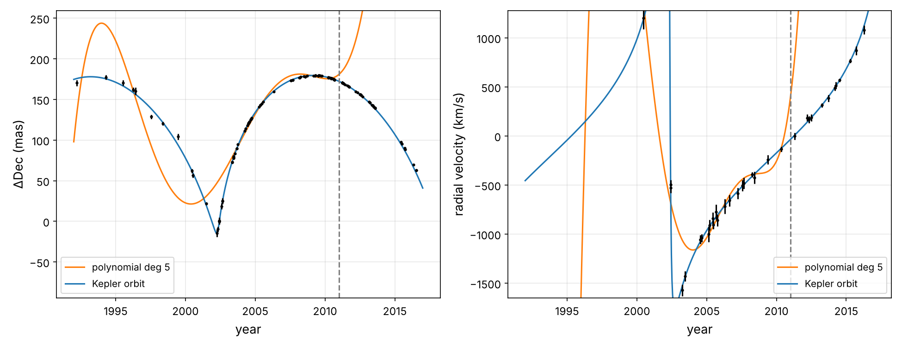
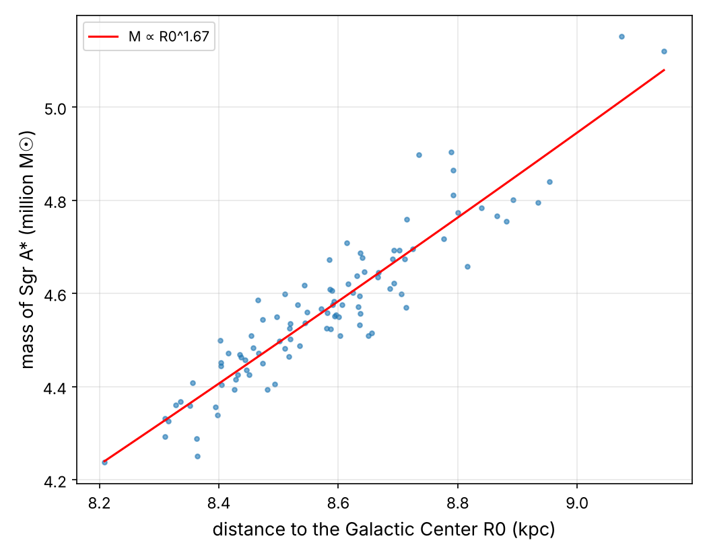
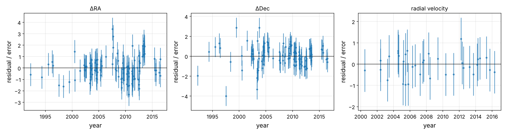
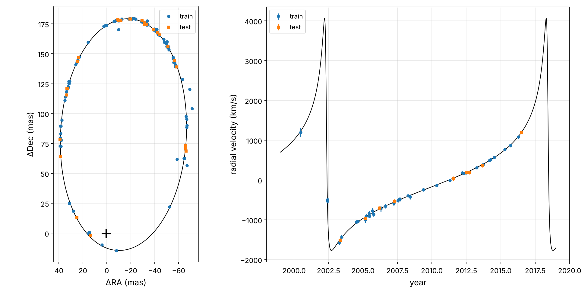
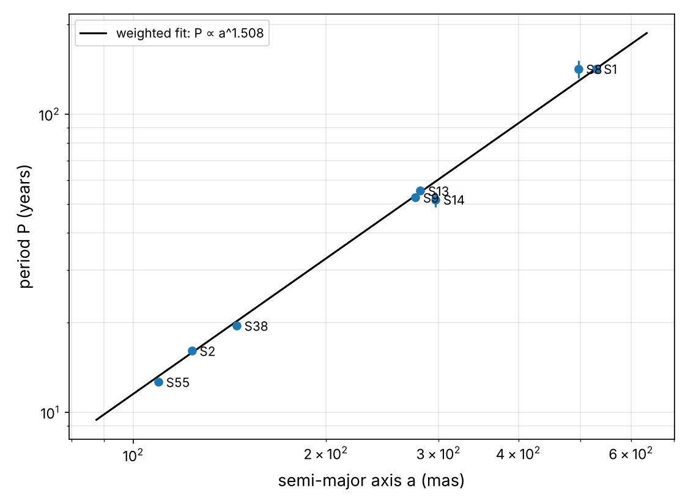

Weighing the Black Hole at the
Center of the Milky Way
In this chapter you will go through a second project end to end, pretending to be a recently hired data scientist in a Galactic Center research group, at the end of 2016. For a quarter of a century, the group has pointed the world's largest telescopes at a tiny patch of sky in the constellation Sagittarius, and measured, night after night, the positions and velocities of a few dozen stars swarming around an invisible object. Your job is to answer one question with that data: how heavy is the thing they orbit?1 Here are the main steps you will go through, the same as in Chapter 1:
- Look at the big picture.
- Get the data.
- Discover and visualize the data to gain insights.
- Prepare the data for Machine Learning algorithms.
- Select a model and train it.
- Fine-tune your model.
- Present your solution.
- Launch, monitor, and maintain your system.
By the end of the chapter you will have measured the mass of Sagittarius A* (pronounced "Sagittarius A-star"), the supermassive black hole at the center of our galaxy, and our distance to it, from the real measurements. Along the way you will see Newton's inverse-square law appear in the data, use Kepler's third law (from Chapter 1) as a scale, and predict the 2018 close passage of the star S2. That passage was later used to test Einstein's general relativity.
Working with Real Data
As in Chapter 1, every number in this chapter is real. The data come from a single published table:
| Dataset | Kind | Content |
|---|---|---|
| Gillessen et al. (2017), An Update on Monitoring Stellar Orbits in the Galactic Center, ApJ 837, 30, Table 5 | raw telescope data | Positions (1992–2016) and radial velocities (2000–2016) of 17 "S-stars", measured with ESO's NTT and VLT telescopes, and a few epochs from Keck and Gemini |
The table is distributed by the CDS VizieR service, which hosts the machine-readable tables of thousands of papers. It is a great place to look for real astronomical datasets. Each position is a measurement made on an infrared image, after a lot of careful work: correcting the camera's distortions, tying the images to a common reference frame, and modeling the blurring by the atmosphere. Each comes with its own uncertainty. These are not simulated numbers. Some of them are good, some of them are bad, and a few are affected by a passing star. That is what makes them interesting.
The notebook sgr_a_star_mass_project.ipynb in this folder runs every line of code in this chapter and produces every output and figure. A copy of the table is cached in datasets/sstars/, so it also runs offline.
Look at the Big Picture
Welcome to the Galactic Center group! Since the 1970s, astronomers have known about a compact radio source at the center of the Milky Way, called Sagittarius A*. Is it a supermassive black hole? A dense cluster of dark stars? Something more exotic? The only way to know what something is, when you cannot see it, is to weigh it and measure its size. The stars around it can do both, if you follow them long enough.
Frame the Problem
The first question to ask is what the objective is. Here it is a measurement: the mass \(M\) of Sgr A* and the distance \(R_0\) to the Galactic Center, with honest error bars. Both are inputs to many downstream "systems": models of the Milky Way's rotation, tests of general relativity, the size of the black hole's shadow for the Event Horizon Telescope, and calibrations of how black hole masses relate to the properties of their galaxies. A biased answer would propagate into all of them.
What is the current solution? Before stellar orbits, the mass was estimated from the motions of gas clouds and of many stars, assuming they were in equilibrium. Those estimates were uncertain by factors of two and could not exclude a cluster of dark objects. A single, well-sampled orbit removes those assumptions.
Let's frame the problem. It is supervised learning: every measurement comes with a time (the input) and a value (the target). It is a regression task. But this time there are three kinds of target, sharing one underlying model: two sky coordinates and a velocity. It is a multi-output regression, a single star described by one set of 13 parameters. It is model-based learning again, and the parameters we care about (\(M\) and \(R_0\)) are not predictions at all: they are parameters of the model. This is very common in science. We will judge the model by its predictions, but what we want are its weights. Finally, the dataset is small (a few hundred numbers), so plain batch learning on a laptop will do.
Select a Performance Measure
In Chapter 1 all our errors had the same units (arcminutes) and roughly the same size. Here we mix milliarcseconds and kilometers per second, and each measurement comes with its own uncertainty \(\sigma^{(i)}\), from 0.3 mas for the best VLT images to 10 mas for the early NTT ones. A 2 mas miss is a disaster for one point and perfectly fine for another. The natural solution is to measure each error in units of its own uncertainty. This gives the normalized residual, or pull, \((h(\mathbf{x}^{(i)}) - y^{(i)})/\sigma^{(i)}\). We average its square:
This is just the MSE (the square of the RMSE from Chapter 1), with each instance weighted by \(1/\sigma^2\). It has a wonderful property: if the model is correct and the uncertainties are honest, the pulls follow a standard normal distribution, so \(\chi^2_{/N} \approx 1\). A value much larger than 1 means the model is wrong, or the errors are underestimated. A value much smaller than 1 means the model is overfitting, or the errors are overestimated. Minimizing \(\chi^2\) is also exactly what maximum likelihood prescribes for Gaussian errors. That is why it is the workhorse of physics.
Check the Assumptions
- A point mass. We assume all the mass is concentrated at one point, with no significant extended mass (stars, dark remnants) inside the orbit. We will check this with the residuals.
- Newton, not Einstein. We use Kepler's laws. At S2's closest approach, its speed is a few percent of the speed of light, so relativistic effects of order 100 km/s exist. They are smaller than the velocity uncertainties of the data before 2016. We will come back to this when we "launch".
- The reference frame. Positions are measured relative to a reference frame defined by radio masers (stars with strong radio emission), and Sgr A* itself is fixed in it only up to a fraction of a mas and a small drift. We will let the model fit the black hole's position \((x_0, y_0)\) and optionally a slow drift \((v_x, v_y)\).
- One star at a time. We use S2 first: it has the shortest well-sampled orbit (about 16 years), and the 25 years of data cover more than a full revolution, including the 2002 pericenter passage.
Get the Data
Create the Workspace
Same as in Chapter 1:
$ python3 -m pip install -U jupyter numpy pandas matplotlib scipy scikit-learn $ jupyter notebook
# Python ≥3.8 is required
import sys
assert sys.version_info >= (3, 8)
# Scikit-Learn ≥1.0 is required
import sklearn
assert sklearn.__version__ >= "1.0"
# Common imports
import os
import numpy as np
import pandas as pd
# To make this notebook's output stable across runs
np.random.seed(42)
# To plot pretty figures
import matplotlib as mpl
import matplotlib.pyplot as plt
mpl.rc('axes', labelsize=13)
mpl.rc('xtick', labelsize=11)
mpl.rc('ytick', labelsize=11)
# Where to save the figures
PROJECT_ROOT_DIR = "."
IMAGES_PATH = os.path.join(PROJECT_ROOT_DIR, "images")
os.makedirs(IMAGES_PATH, exist_ok=True)
def save_fig(fig_id, tight_layout=True, fig_extension="png", resolution=150):
path = os.path.join(IMAGES_PATH, fig_id + "." + fig_extension)
print("Saving figure", fig_id)
if tight_layout:
plt.tight_layout()
plt.savefig(path, format=fig_extension, dpi=resolution)
Download the Data
VizieR has a simple web API: ask for a table of a catalog and get it back as tab-separated values. The service is mirrored around the world, so our function tries several mirrors until one answers. Then it caches the result:
import urllib.request
DATASETS_PATH = os.path.join("datasets", "sstars")
CATALOG = "J/ApJ/837/30" # Gillessen et al. (2017) in the CDS VizieR service
VIZIER_MIRRORS = ["https://vizier.cds.unistra.fr", "https://vizier.cfa.harvard.edu",
"https://vizier.idia.ac.za"]
def fetch_vizier_table(table, filename, path=DATASETS_PATH):
"""Download a VizieR table as tab-separated values (tries several mirrors)."""
os.makedirs(path, exist_ok=True)
tsv_path = os.path.join(path, filename)
if os.path.exists(tsv_path):
return tsv_path
query = f"/viz-bin/asu-tsv?-source={CATALOG}/{table}&-out.all&-out.max=unlimited"
for mirror in VIZIER_MIRRORS:
try:
text = urllib.request.urlopen(mirror + query, timeout=60).read().decode()
break
except Exception as error:
print("mirror failed:", mirror, error)
with open(tsv_path, "w") as f:
f.write(text)
return tsv_path
def load_vizier_tsv(tsv_path):
"""VizieR TSV = '#' comment lines, a header, a units line, a dashes line, data."""
lines = [l.rstrip("\n") for l in open(tsv_path) if not l.startswith("#") and l.strip()]
header = lines[0].split("\t")
rows = [l.split("\t") for l in lines[3:]]
df = pd.DataFrame(rows, columns=header).replace(r"^\s*$", np.nan, regex=True)
for col in df.columns:
converted = pd.to_numeric(df[col], errors="coerce")
if converted.notna().sum() == df[col].notna().sum(): # purely numeric column
df[col] = converted
else:
df[col] = df[col].str.strip()
return df
raw = load_vizier_tsv(fetch_vizier_table("table5", "gillessen2017_table5.tsv"))
raw.iloc[:5, :16]
| recno | Date | Flag | oRA-S1 | e_oRA-S1 | oDE-S1 | e_oDE-S1 | RV-S1 | e_RV-S1 | oRA-S2 | e_oRA-S2 | oDE-S2 | e_oDE-S2 | RV-S2 | e_RV-S2 | oRA-S4 | |
|---|---|---|---|---|---|---|---|---|---|---|---|---|---|---|---|---|
| 0 | 1 | 1992.224 | a | -179.1 | 4.5 | 179.8 | 4.5 | NaN | NaN | -9.9 | 3.7 | 170.2 | 3.8 | NaN | NaN | 97.9 |
| 1 | 2 | 1994.314 | a | -178.4 | 8.5 | 97.9 | 2.5 | NaN | NaN | -33.7 | 3.7 | 177.5 | 2.9 | NaN | NaN | NaN |
| 2 | 3 | 1995.534 | a | -167.5 | 5.5 | 49.6 | 4.9 | NaN | NaN | -41.8 | 3.0 | 170.3 | 3.5 | NaN | NaN | 158.4 |
| 3 | 4 | 1996.253 | a | -161.2 | 10.0 | 21.4 | 8.7 | NaN | NaN | -47.6 | 2.9 | 162.2 | 2.6 | NaN | NaN | NaN |
| 4 | 5 | 1996.427 | a | -151.7 | 5.1 | 9.8 | 6.6 | NaN | NaN | -50.3 | 1.7 | 160.2 | 4.4 | NaN | NaN | NaN |
Each row is an epoch (a night or a few nights of observations), and each star has a group of six columns: ΔRA and its error, ΔDec and its error, the radial velocity and its error. The Flag column says whether the row holds positions (a, for astrometry) or radial velocities (rv):
raw.shape, raw["Inst"].value_counts().to_dict(), raw["Flag"].value_counts().to_dict()
((216, 106),
{'VLT': 201, 'NTT': 11, 'Keck': 3, 'GEMINI': 1},
{'a': 168, 'rv': 48})
Take a Quick Look at the Data Structure
This "wide" layout, with one block of columns per star, is convenient for printing in a journal, but awkward for analysis. Let's reshape it into a "tidy" table with one row per star per epoch, which makes grouping and filtering easy:
def tidy_observations(raw):
"""Wide table (one column group per star) -> one row per star and epoch."""
stars = [c[4:] for c in raw.columns if c.startswith("oRA-")]
frames = []
for star in stars:
cols = {f"oRA-{star}": "x", f"e_oRA-{star}": "x_err", f"oDE-{star}": "y",
f"e_oDE-{star}": "y_err", f"RV-{star}": "rv", f"e_RV-{star}": "rv_err"}
part = raw[["Date", "Flag", "Inst"] + list(cols)].rename(columns=cols)
part = part.dropna(subset=["x", "rv"], how="all")
frames.append(part.assign(star=star))
obs = pd.concat(frames, ignore_index=True)
return obs.rename(columns={"Date": "date", "Flag": "kind", "Inst": "inst"})
obs = tidy_observations(raw)
obs.head()
| date | kind | inst | x | x_err | y | y_err | rv | rv_err | star | |
|---|---|---|---|---|---|---|---|---|---|---|
| 0 | 1992.224 | a | NTT | -179.1 | 4.5 | 179.8 | 4.5 | NaN | NaN | S1 |
| 1 | 1994.314 | a | NTT | -178.4 | 8.5 | 97.9 | 2.5 | NaN | NaN | S1 |
| 2 | 1995.534 | a | NTT | -167.5 | 5.5 | 49.6 | 4.9 | NaN | NaN | S1 |
| 3 | 1996.253 | a | NTT | -161.2 | 10.0 | 21.4 | 8.7 | NaN | NaN | S1 |
| 4 | 1996.427 | a | NTT | -151.7 | 5.1 | 9.8 | 6.6 | NaN | NaN | S1 |
obs.info()
<class 'pandas.DataFrame'> RangeIndex: 2585 entries, 0 to 2584 Data columns (total 10 columns): # Column Non-Null Count Dtype --- ------ -------------- ----- 0 date 2585 non-null float64 1 kind 2585 non-null str 2 inst 2585 non-null str 3 x 2232 non-null float64 4 x_err 2232 non-null float64 5 y 2232 non-null float64 6 y_err 2232 non-null float64 7 rv 353 non-null float64 8 rv_err 353 non-null float64 9 star 2585 non-null str dtypes: float64(7), str(3) memory usage: 202.1 KB
There are 2,585 rows: 2,232 positions and 353 radial velocities, for 17 stars. How many of each per star?
obs.groupby("star")["kind"].value_counts().unstack(fill_value=0).sort_values("a", ascending=False).T
| star | S8 | S1 | S9 | S12 | S31 | S17 | S21 | S2 | S18 | S4 | S24 | S13 | S38 | S19 | S14 | S54 | S55 |
|---|---|---|---|---|---|---|---|---|---|---|---|---|---|---|---|---|---|
| kind | |||||||||||||||||
| a | 166 | 161 | 160 | 158 | 155 | 150 | 146 | 145 | 142 | 136 | 130 | 127 | 114 | 105 | 99 | 94 | 44 |
| rv | 29 | 29 | 22 | 27 | 24 | 30 | 17 | 44 | 12 | 34 | 22 | 22 | 5 | 19 | 12 | 3 | 2 |
S2 has 145 positions and 44 velocities. Let's focus on it and look at the numbers:
s2 = obs[obs["star"] == "S2"].copy()
s2.describe()
| date | x | x_err | y | y_err | rv | rv_err | |
|---|---|---|---|---|---|---|---|
| count | 189.000000 | 145.000000 | 145.000000 | 145.000000 | 145.000000 | 44.000000 | 44.000000 |
| mean | 2008.215344 | -17.901379 | 0.967586 | 134.140690 | 0.940690 | -264.113636 | 46.636364 |
| std | 4.846143 | 35.501639 | 1.255703 | 51.143604 | 1.201995 | 729.837166 | 17.609578 |
| min | 1992.224000 | -71.200000 | 0.300000 | -14.400000 | 0.300000 | -1571.000000 | 17.000000 |
| 25% | 2004.535000 | -48.000000 | 0.400000 | 111.100000 | 0.400000 | -844.250000 | 34.000000 |
| 50% | 2009.273000 | -29.000000 | 0.400000 | 155.600000 | 0.400000 | -453.500000 | 45.000000 |
| 75% | 2011.695000 | 23.000000 | 0.700000 | 175.100000 | 0.700000 | 224.500000 | 57.000000 |
| max | 2016.530000 | 39.100000 | 9.000000 | 179.600000 | 8.400000 | 1199.000000 | 113.000000 |
s2[["date", "x_err", "y_err", "rv_err"]].hist(bins=30, figsize=(11, 6))
save_fig("s2_attribute_histograms")
plt.show()

Notice a few things:
- The uncertainties span more than an order of magnitude: 0.3 to 9 mas for positions, 17 to 113 km/s for velocities. Measurements are not equally valuable, which is why we chose a weighted metric.
- Most observations are recent. Before 2002 the images came from the smaller NTT telescope, with bigger errors and fewer epochs. Velocities only start in 2000, when spectrographs with adaptive optics became available.
- The velocities range from −1,571 to +1,199 km/s. That is about 0.5% of the speed of light, for a star. The Sun orbits the Galaxy at a "mere" 230 km/s.
Create a Test Set
The orbit of S2 is very elongated, and the star spends most of its time far from the black hole, moving slowly. The few measurements close to Sgr A*, around the 2002 pericenter passage, are by far the most informative: that is where the star turns around and where gravity is strongest. If a random split happened to put all of them in the test set, the model could not learn the orbit. If it put none of them in the test set, we would never test the hardest part.
This is exactly the situation of the census data in the classic housing example, where median income is a very important attribute and you want the test set to be representative of its distribution. The solution is the same: stratified sampling. Let's create a "distance category" attribute from the projected distance to Sgr A*, and the same for the size of the radial velocity:
s2["r"] = np.hypot(s2["x"], s2["y"]) # projected distance from Sgr A* (mas)
s2["r_cat"] = pd.cut(s2["r"], bins=[0, 60, 120, 160, np.inf], labels=[1, 2, 3, 4])
s2["rv_cat"] = pd.cut(s2["rv"].abs(), bins=[0, 500, 1000, np.inf], labels=[1, 2, 3])
s2["r_cat"].value_counts().sort_index()
r_cat 1 11 2 26 3 33 4 75 Name: count, dtype: int64
Only 11 positions are within 60 mas of the black hole. Now let's split with Scikit-Learn's StratifiedShuffleSplit, separately for positions and velocities:
from sklearn.model_selection import StratifiedShuffleSplit
def stratified_split(df, cat_col, test_size=0.2, seed=42):
split = StratifiedShuffleSplit(n_splits=1, test_size=test_size, random_state=seed)
train_idx, test_idx = next(split.split(df, df[cat_col]))
return df.iloc[train_idx], df.iloc[test_idx]
astro = s2[s2["kind"] == "a"]
spectro = s2[s2["kind"] == "rv"]
astro_train, astro_test = stratified_split(astro, "r_cat")
rv_train, rv_test = stratified_split(spectro, "rv_cat")
train_set = pd.concat([astro_train, rv_train]).sort_values("date")
test_set = pd.concat([astro_test, rv_test]).sort_values("date")
len(train_set), len(test_set)
(151, 38)
Did it work? Let's compare the distance-category proportions in the full dataset, in the stratified test set, and in a test set built by purely random sampling:
from sklearn.model_selection import train_test_split
def cat_proportions(data):
return data["r_cat"].value_counts() / len(data)
rnd_train, rnd_test = train_test_split(astro, test_size=0.2, random_state=42)
compare = pd.DataFrame({"Overall": cat_proportions(astro),
"Stratified": cat_proportions(astro_test),
"Random": cat_proportions(rnd_test)}).sort_index()
compare["Rand. %error"] = 100 * compare["Random"] / compare["Overall"] - 100
compare["Strat. %error"] = 100 * compare["Stratified"] / compare["Overall"] - 100
compare.round(3)
| Overall | Stratified | Random | Rand. %error | Strat. %error | |
|---|---|---|---|---|---|
| r_cat | |||||
| 1 | 0.076 | 0.069 | 0.138 | 81.818 | -9.091 |
| 2 | 0.179 | 0.172 | 0.138 | -23.077 | -3.846 |
| 3 | 0.228 | 0.241 | 0.241 | 6.061 | 6.061 |
| 4 | 0.517 | 0.517 | 0.483 | -6.667 | 0.000 |
The random test set has almost twice too many close-approach positions (an 82% error on the most important category). The stratified test set is within one measurement of perfect.
Discover and Visualize the Data to Gain Insights
Visualizing the Sky
Let's start with what the telescope sees: a sky map of all the stars over 25 years (Figure 2-2). Note that astronomers draw east to the left, as on any sky map: we look at the sky from below.
astrometry = obs[obs["kind"] == "a"]
fig, ax = plt.subplots(figsize=(8, 8))
for star, track in astrometry.groupby("star"):
ax.plot(track["x"], track["y"], ".", ms=3, label=star)
ax.plot(0, 0, "k+", ms=16, mew=2)
ax.text(10, -30, "Sgr A*", fontsize=12)
ax.invert_xaxis() # east is to the left on the sky
ax.set_xlabel("ΔRA (mas, east →← west)"); ax.set_ylabel("ΔDec (mas)")
ax.set_aspect("equal"); ax.grid(alpha=0.3)
ax.legend(ncol=3, fontsize=8, loc="upper right")
save_fig("sstars_sky_plot")
plt.show()

This one picture already says a lot. The stars move along curved paths, and the curvature is strongest close to the cross. They are in orbit around something at that position, and there is nothing visible there. Now let's zoom in on S2, colored by time (Figure 2-3):
s2_train = train_set.copy()
s2_astro = s2_train[s2_train["kind"] == "a"]
fig, ax = plt.subplots(figsize=(6.5, 8))
sc = ax.scatter(s2_astro["x"], s2_astro["y"], c=s2_astro["date"], cmap="viridis", s=20, zorder=3)
ax.errorbar(s2_astro["x"], s2_astro["y"], xerr=s2_astro["x_err"], yerr=s2_astro["y_err"],
fmt="none", ecolor="gray", alpha=0.5)
ax.plot(0, 0, "k+", ms=16, mew=2)
ax.invert_xaxis(); ax.set_aspect("equal"); ax.grid(alpha=0.3)
ax.set_xlabel("ΔRA (mas)"); ax.set_ylabel("ΔDec (mas)")
plt.colorbar(sc, label="year", shrink=0.7)
save_fig("s2_sky_orbit_plot")
plt.show()

S2 moves slowly along the top of a long, thin ellipse for most of its 16-year orbit, then whips around the black hole in a few months in 2002. The radial velocities tell the same story along the third dimension (Figure 2-4): the star was approaching us at more than 1,500 km/s in 2003, right after pericenter. It then slowed down and was receding at 1,200 km/s by 2016, as it fell back for its next passage.
s2_rv = s2_train[s2_train["kind"] == "rv"]
fig, ax = plt.subplots(figsize=(10, 4))
ax.errorbar(s2_rv["date"], s2_rv["rv"], yerr=s2_rv["rv_err"], fmt="o", ms=4)
ax.axhline(0, color="k", lw=0.6)
ax.set_xlabel("year"); ax.set_ylabel("radial velocity (km/s)")
ax.grid(alpha=0.3)
save_fig("s2_radial_velocity_plot")
plt.show()

Looking for Correlations
Before building any orbit model, let's ask the data a model-free question: where does the force point, and how does its strength depend on distance? We can measure a star's acceleration directly. Over a short window of time, any smooth path looks like a parabola: \(x(t) \approx x_0 + v t + \tfrac{1}{2}a t^2\). So a weighted quadratic fit to the positions in a sliding window gives the acceleration (twice the quadratic coefficient), along with its uncertainty from the fit's covariance. This is local polynomial regression, a classic non-parametric ML tool:
def local_accelerations(track, window=3.0, step=0.5, min_points=7):
"""Fit x(t), y(t) with quadratics in sliding windows -> acceleration vectors."""
rows = []
t = track["date"].values
for t0 in np.arange(t.min() + window / 2, t.max() - window / 2 + 1e-9, step):
sel = np.abs(t - t0) <= window / 2
if sel.sum() < min_points:
continue
dt = t[sel] - t0
out = {"star": track["star"].iloc[0], "t": t0}
for c in ("x", "y"):
w = 1 / track[c + "_err"].values[sel]
coef, cov = np.polyfit(dt, track[c].values[sel], 2, w=w, cov="unscaled")
out[c] = coef[2] # position at t0
out["a" + c] = 2 * coef[0] # acceleration (mas/yr²)
out["a" + c + "_err"] = 2 * np.sqrt(cov[0, 0])
rows.append(out)
return pd.DataFrame(rows)
acc = pd.concat([local_accelerations(tr) for _, tr in astrometry.groupby("star")
if len(tr) >= 10], ignore_index=True)
acc["r"] = np.hypot(acc["x"], acc["y"])
acc["a"] = np.hypot(acc["ax"], acc["ay"])
acc["snr"] = acc["a"] / np.hypot(acc["ax_err"], acc["ay_err"])
acc = acc[acc["snr"] > 5]
acc["cos_angle"] = -(acc["ax"] * acc["x"] + acc["ay"] * acc["y"]) / (acc["a"] * acc["r"])
print(len(acc), "significant accelerations from", acc["star"].nunique(), "stars")
acc[["star", "t", "r", "a", "snr", "cos_angle"]].round(2).head()
51 significant accelerations from 8 stars
| star | t | r | a | snr | cos_angle | |
|---|---|---|---|---|---|---|
| 4 | S1 | 2003.22 | 212.10 | 4.96 | 6.56 | 0.97 |
| 5 | S1 | 2003.72 | 223.68 | 4.90 | 6.91 | 0.95 |
| 6 | S1 | 2004.22 | 234.62 | 3.72 | 5.82 | 1.00 |
| 7 | S1 | 2004.72 | 245.40 | 3.90 | 5.86 | 0.99 |
| 8 | S1 | 2005.22 | 255.79 | 4.65 | 6.61 | 1.00 |
We kept only the accelerations detected at more than 5σ. The cos_angle column is the cosine of the angle between the acceleration and the direction toward Sgr A*: 1 means "pointing straight at the black hole". Let's draw the acceleration directions on the sky (Figure 2-5):
# Arrows of equal length show the *direction*; colour shows the *size* (log scale)
fig, ax = plt.subplots(figsize=(8.5, 8))
ux, uy = acc["ax"] / acc["a"], acc["ay"] / acc["a"]
q = ax.quiver(acc["x"], acc["y"], ux, uy, np.log10(acc["a"]), cmap="plasma",
angles="xy", scale_units="xy", scale=1 / 45, width=0.004)
ax.plot(astrometry["x"], astrometry["y"], ".", color="lightgray", ms=2, zorder=0)
ax.plot(0, 0, "k+", ms=16, mew=2)
ax.set_aspect("equal"); ax.grid(alpha=0.3)
ax.set_xlim(450, -450); ax.set_ylim(-450, 450)
ax.set_xlabel("ΔRA (mas)"); ax.set_ylabel("ΔDec (mas)")
plt.colorbar(q, label="log₁₀ |acceleration| (mas/yr²)", shrink=0.75)
save_fig("acceleration_vectors_plot")
plt.show()

All the arrows, measured on different stars in different years, point toward the same spot, the position of Sgr A*. The force is central. And the closer the star, the stronger the acceleration (redder arrows). Let's quantify this with the correlation matrix:
acc[["r", "a", "cos_angle"]].corr()
| r | a | cos_angle | |
|---|---|---|---|
| r | 1.000000 | -0.734511 | 0.409206 |
| a | -0.734511 | 1.000000 | -0.643720 |
| cos_angle | 0.409206 | -0.643720 | 1.000000 |
The acceleration is strongly anti-correlated with the projected distance (the farther, the weaker). Correlations only capture linear relationships, though. To find the law, let's use the log–log trick again (Figure 2-6):
slope, intercept = np.polyfit(np.log10(acc["r"]), np.log10(acc["a"]), 1)
fig, ax = plt.subplots(figsize=(8, 5))
for star, grp in acc.groupby("star"):
ax.loglog(grp["r"], grp["a"], "o", ms=4, label=star)
rr = np.logspace(np.log10(acc["r"].min()), np.log10(acc["r"].max()), 50)
ax.loglog(rr, 10**intercept * rr**slope, "k-", label=f"fit: slope {slope:.2f}")
ax.loglog(rr, 10**intercept * rr**-2 * np.median(acc["r"])**(slope + 2), "k:", label="slope −2")
ax.set_xlabel("projected distance r (mas)"); ax.set_ylabel("|acceleration| (mas/yr²)")
ax.grid(alpha=0.3, which="both"); ax.legend(fontsize=8, ncol=2)
save_fig("acceleration_vs_distance_plot")
plt.show()
slope
Saving figure acceleration_vs_distance_plot np.float64(-1.2114771249224088)

The fitted slope (about −1.2) is shallower than −2. But look at the shape of the cloud: it has a sharp upper envelope that follows the dotted −2 line, with points scattered below it. That is the signature of projection. We only see the distance projected onto the sky, \(r_{\text{proj}} \le r\), and the projected acceleration is \(GM\,r_{\text{proj}}/r^3\). A star far in front of or behind Sgr A* looks close but feels a weak pull, so it falls below the line, never above. Real data rarely give you the clean law directly. Knowing how your measurement distorts the truth is half of data science.
Experimenting with Attribute Combinations
If the acceleration is \(a = GM/r^2\), then the combination \(a\,r^2\) should be the same constant, \(GM\), for every star. In our angular units, \(a\,[\text{mas/yr}^2] \times r^2\,[\text{mas}^2]\) measures \(GM/R_0^3\). Projection makes this combination too small for most points, so the honest estimate comes from the top of its distribution:
# a * r² should be constant (= G M / R0³ in angular units, if r were the true 3D distance)
acc["a_r2"] = acc["a"] * acc["r"] ** 2
acc.groupby("star")["a_r2"].median().sort_values() / 1e6
star S19 0.119863 S2 0.148309 S1 0.245353 S55 0.255214 S13 0.307704 S9 0.394781 S54 0.575331 S38 0.628343 Name: a_r2, dtype: float64
# The *largest* a·r² values are the least affected by projection (see text)
mu_acc = acc["a_r2"].quantile(0.9)
print(f"G M / R0³ ≈ {mu_acc:.3g} mas³/yr²")
# Kepler III in these units: P² = 4π² a³ / (G M) (a in mas, P in yr, angles!)
M_over_R0cube = mu_acc / (4 * np.pi**2) # in mas³/yr² -> solar masses / kpc³
print(f"M / R0³ ≈ {M_over_R0cube:.3g} M_sun per kpc³ -> M ≈ {M_over_R0cube * 8.0**3:.3g} M_sun if R0 = 8 kpc")
G M / R0³ ≈ 3.95e+05 mas³/yr² M / R0³ ≈ 1e+04 M_sun per kpc³ -> M ≈ 5.12e+06 M_sun if R0 = 8 kpc
With almost no modeling, and a guessed distance of 8 kpc, we already find that the central object weighs about five million suns. That is a great sanity check for later. Keep it in mind.
Prepare the Data for Machine Learning Algorithms
Custom Transformers
Our models need one row per measured number. A position row contains two numbers (ΔRA and ΔDec), and a velocity row contains one. So we'll "stack" the data: each instance gets three features, the time, the kind of number (0 = ΔRA, 1 = ΔDec, 2 = radial velocity), and its uncertainty. The target is the number itself. As usual, we write this as a Scikit-Learn transformer, so it can be reused on the test set and tuned. The error_floor hyperparameters let us add a constant in quadrature to every uncertainty. This is a standard way to account for systematic errors that the quoted uncertainties miss.
from sklearn.base import BaseEstimator, TransformerMixin
KIND_RA, KIND_DEC, KIND_RV = 0, 1, 2
class ObservationStacker(BaseEstimator, TransformerMixin):
"""One row per epoch (x, y or rv) -> one row per *measured number*:
features = [time, kind code, uncertainty]; target = the number."""
def __init__(self, error_floor=0.0, rv_error_floor=0.0):
self.error_floor = error_floor # mas, added in quadrature
self.rv_error_floor = rv_error_floor # km/s
def fit(self, X, y=None):
return self
def __sklearn_is_fitted__(self):
return True
def transform(self, X):
parts = []
a = X[X["kind"] == "a"]
for code, col in ((KIND_RA, "x"), (KIND_DEC, "y")):
err = np.hypot(a[col + "_err"], self.error_floor)
parts.append(np.c_[a["date"], np.full(len(a), code), err, a[col]])
v = X[X["kind"] == "rv"]
err = np.hypot(v["rv_err"], self.rv_error_floor)
parts.append(np.c_[v["date"], np.full(len(v), KIND_RV), err, v["rv"]])
return np.vstack(parts)
stacked = ObservationStacker().fit_transform(s2_train)
X_train, y_train = stacked[:, :3], stacked[:, 3]
pd.DataFrame(stacked[[0, 1, -1]], columns=["time", "kind", "error", "value"])
| time | kind | error | value | |
|---|---|---|---|---|
| 0 | 1992.224 | 0.0 | 3.7 | -9.9 |
| 1 | 1994.314 | 0.0 | 3.7 | -33.7 |
| 2 | 2016.284 | 2.0 | 45.0 | 1081.0 |
Handling Categorical Attributes
The kind feature is categorical: 0, 1 and 2 are labels, not quantities. Velocity is not "twice" ΔDec. For a generic ML model such as a linear regression or a neural network you would one-hot encode it:
from sklearn.preprocessing import OneHotEncoder
kind_encoder = OneHotEncoder()
kind_1hot = kind_encoder.fit_transform(X_train[:, [1]])
kind_encoder.categories_, kind_1hot.toarray()[[0, -1]]
([array([0., 1., 2.])],
array([[1., 0., 0.],
[0., 0., 1.]]))
Our physical model will not need the one-hot version. It uses the code directly, to decide which of its three outputs (ΔRA, ΔDec or \(v_z\)) to compare with each target. The polynomial baseline below does the equivalent, by fitting one model per category.
Select and Train a Model
We need the performance measure first:
def chi2_per_point(y_true, y_pred, err):
"""Mean squared *normalized* residual: ~1 if the model is right."""
return np.mean(((y_true - y_pred) / err) ** 2)
A Baseline: Polynomials
Let's start with a generic, physics-free model: a weighted polynomial in time for each kind of measurement. Polynomials can approximate any smooth curve, given a high enough degree:
from sklearn.base import RegressorMixin
from sklearn.linear_model import LinearRegression
from sklearn.preprocessing import PolynomialFeatures
class PolynomialTrackRegressor(BaseEstimator, RegressorMixin):
"""Baseline: an independent weighted polynomial in time for each kind of data."""
def __init__(self, degree=3):
self.degree = degree
def fit(self, X, y):
self.models_ = {}
for kind in np.unique(X[:, 1]):
sel = X[:, 1] == kind
t = (X[sel, 0] - 2005) / 10
model = make_poly(self.degree).fit(t.reshape(-1, 1), y[sel],
lin__sample_weight=1 / X[sel, 2] ** 2)
self.models_[kind] = model
return self
def predict(self, X):
out = np.empty(len(X))
for kind, model in self.models_.items():
sel = X[:, 1] == kind
if sel.any():
out[sel] = model.predict(((X[sel, 0] - 2005) / 10).reshape(-1, 1))
return out
def score(self, X, y):
return -chi2_per_point(y, self.predict(X), X[:, 2])
from sklearn.pipeline import Pipeline
def make_poly(degree):
return Pipeline([("poly", PolynomialFeatures(degree, include_bias=False)),
("lin", LinearRegression())])
for degree in (2, 5, 10):
poly_reg = PolynomialTrackRegressor(degree).fit(X_train, y_train)
print(f"degree {degree:2d}: training chi2 per point = {-poly_reg.score(X_train, y_train):10.2f}")
degree 2: training chi2 per point = 666.13 degree 5: training chi2 per point = 114.49 degree 10: training chi2 per point = 16.76
A degree-2 polynomial underfits badly (χ²/N = 666), and even degree 10 is still 17 times worse than it should be. The orbit has a sharp "hairpin" at pericenter that polynomials hate. We could keep increasing the degree, but you can probably guess what will happen when we test it.
A Physical Model: the Kepler Orbit
Now let's write down the physics. The model has 13 parameters: the orbital elements of S2 (\(a\) in mas, \(e\), \(i\), \(\Omega\), \(\omega\), \(t_p\), \(P\)), the distance \(R_0\), the position and drift of the black hole on the sky (\(x_0, y_0, v_x, v_y\)), and a velocity offset \(v_{z0}\). Here is how it computes a prediction, step by step:
- The mean anomaly \(M = 2\pi(t - t_p)/P\), as in Chapter 1.
- Kepler's equation \(E - e\sin E = M\), solved with Newton's method. For \(e = 0.88\) the starting point matters, so we start at \(E = \pi\).
- The position in the orbital plane, in units of \(a\): \(X = \cos E - e\), \(Y = \sqrt{1-e^2}\sin E\).
- Rotation onto the sky with the Thiele–Innes constants \(A, B, F, G\). They are just the components of the rotation by \((\Omega, i, \omega)\) that matter for the sky plane:
Equation 2-4. Projection of the orbit onto the sky$$\Delta\text{Dec} = A X + F Y + y_0, \qquad \Delta\text{RA} = B X + G Y + x_0$$
- The radial velocity, the time derivative of the third (line-of-sight) coordinate. It needs physical units, which is where \(R_0\) enters, through Equation 2-1:
Equation 2-5. Radial velocity$$v_z = a\,R_0\,\sin i\,\big(\sin\omega\,\dot X + \cos\omega\,\dot Y\big) \times 4.74\ \tfrac{\text{km/s}}{\text{AU/yr}} + v_{z0}$$
AU_YR_IN_KMS = 4.740470463 # 1 AU per year in km/s
def solve_kepler(M, e, n_iter=60):
"""E - e sin E = M (Newton's method, safe for e up to ~0.99)."""
E = M + e * np.sin(M)
E = np.where(e > 0.8, np.pi * np.ones_like(M), E) # better start for big e
for _ in range(n_iter):
E = E - (E - e * np.sin(E) - M) / (1 - e * np.cos(E))
return E
def orbit_model(params, t):
"""Sky offsets (mas) and radial velocity (km/s) of a star on a Kepler orbit.
params: a (mas), e, i, Omega, omega (deg), t_peri (yr), P (yr), R0 (kpc),
x0, y0 (mas), vx, vy (mas/yr), vz0 (km/s)"""
a, e, inc, Om, om, tp, P, R0, x0, y0, vx, vy, vz0 = params
i, O, w = np.radians([inc, Om, om])
M = np.mod(2 * np.pi * (t - tp) / P, 2 * np.pi)
E = solve_kepler(M, e)
X, Y = np.cos(E) - e, np.sqrt(1 - e * e) * np.sin(E) # in units of a
# Thiele-Innes constants: rotate the orbit (i, Omega, omega) onto the sky
A = a * (np.cos(w) * np.cos(O) - np.sin(w) * np.sin(O) * np.cos(i))
B = a * (np.cos(w) * np.sin(O) + np.sin(w) * np.cos(O) * np.cos(i))
F = a * (-np.sin(w) * np.cos(O) - np.cos(w) * np.sin(O) * np.cos(i))
G = a * (-np.sin(w) * np.sin(O) + np.cos(w) * np.cos(O) * np.cos(i))
dec = A * X + F * Y + y0 + vy * (t - 2009.0)
ra = B * X + G * Y + x0 + vx * (t - 2009.0)
# velocity along the line of sight needs physical units: a[AU] = a[mas] * R0[kpc]
Edot = 2 * np.pi / P / (1 - e * np.cos(E))
Xdot, Ydot = -np.sin(E) * Edot, np.sqrt(1 - e * e) * np.cos(E) * Edot
vz = a * R0 * (np.sin(w) * np.sin(i) * Xdot + np.cos(w) * np.sin(i) * Ydot) * AU_YR_IN_KMS
return ra, dec, vz + vz0
This is the key to the whole problem. Positions alone give the shape of the orbit in angles: \(a\) in mas and \(P\) in years. Kepler's third law then only gives \(M/R_0^3\) (Equation 2-2 with Equation 2-1). Velocities are in km/s, a physical unit. By comparing how fast the star moves on the sky (mas/yr) with how fast it moves along the line of sight (km/s), the model can measure the distance. This is the same idea as estimating the distance of a car from how fast it seems to cross your field of view, if you know its actual speed. Once \(R_0\) is known, \(M\) follows:
Now the estimator. As in Chapter 1, it wraps SciPy's least_squares(), which minimizes the sum of squared pulls, and it can restart from several random guesses:
from scipy.optimize import least_squares
ORBIT_PARAMS = ["a", "e", "i", "Omega", "omega", "t_peri", "P", "R0",
"x0", "y0", "vx", "vy", "vz0"]
LOWER = [50, 0.0, 0, -360, -360, 1995, 10, 4, -20, -20, -5, -5, -200]
UPPER = [250, 0.99, 180, 720, 720, 2010, 25, 12, 20, 20, 5, 5, 200]
class KeplerOrbitRegressor(BaseEstimator, RegressorMixin):
"""Fits a Kepler orbit around a point mass to stacked [time, kind, error] data.
fit_drift: also fit the slow drift (vx, vy) of the reference frame."""
def __init__(self, fit_drift=True, n_starts=1, init=None, random_state=42):
self.fit_drift = fit_drift
self.n_starts = n_starts
self.init = init
self.random_state = random_state
def _predict(self, q, X):
ra, dec, rv = orbit_model(q, X[:, 0])
return np.select([X[:, 1] == KIND_RA, X[:, 1] == KIND_DEC], [ra, dec], rv)
def fit(self, X, y):
rng = np.random.RandomState(self.random_state)
free = np.ones(len(ORBIT_PARAMS), bool)
if not self.fit_drift:
free[[ORBIT_PARAMS.index("vx"), ORBIT_PARAMS.index("vy")]] = False
best = None
for k in range(self.n_starts):
if self.init is not None and k == 0:
q0 = np.array([self.init[p] for p in ORBIT_PARAMS], float)
else: # random guess: S2 is clearly on a ~16-yr, very elongated orbit
q0 = np.array([rng.uniform(100, 150), rng.uniform(0.6, 0.95), rng.uniform(0, 180),
rng.uniform(0, 360), rng.uniform(0, 360), rng.uniform(2000, 2004),
rng.uniform(14, 18), 8.0, 0, 0, 0, 0, 0])
if not self.fit_drift:
q0[[10, 11]] = 0.0
def residuals(z):
q = q0.copy(); q[free] = z
return (y - self._predict(q, X)) / X[:, 2]
res = least_squares(residuals, q0[free], bounds=(np.array(LOWER)[free],
np.array(UPPER)[free]), x_scale="jac", max_nfev=3000)
if best is None or res.cost < best[0].cost:
q = q0.copy(); q[free] = res.x
best = (res, q)
self.result_, self.q_ = best
self.params_ = dict(zip(ORBIT_PARAMS, self.q_))
return self
def predict(self, X):
return self._predict(self.q_, X)
def score(self, X, y):
return -chi2_per_point(y, self.predict(X), X[:, 2])
Let's train it, with 40 random restarts:
kepler_reg = KeplerOrbitRegressor(n_starts=40)
kepler_reg.fit(X_train, y_train)
print(f"training chi2 per point = {-kepler_reg.score(X_train, y_train):.3f}")
pd.Series(kepler_reg.params_).round(4)
training chi2 per point = 0.879 a 125.7287 e 0.8838 i 134.4257 Omega 226.3458 omega 65.1004 t_peri 2002.3292 P 16.1026 R0 8.2511 x0 0.9324 y0 -1.3206 vx 0.0944 vy 0.0081 vz0 29.2196 dtype: float64
The training χ²/N is 0.88, right where a correct model should be. Compare this with the polynomials, which never got below 17. And look at the parameters: a period of 16.1 years, an eccentricity of 0.88, and a pericenter passage in 2002.33. And now, the moment we have been waiting for:
def black_hole_mass(params):
a_AU = params["a"] * params["R0"] # mas * kpc = AU (definition of the parsec)
return a_AU**3 / params["P"]**2 # Kepler III in solar units: M = a³/P²
print(f"M = {black_hole_mass(kepler_reg.params_) / 1e6:.3f} million solar masses, "
f"R0 = {kepler_reg.params_['R0']:.3f} kpc")
M = 4.306 million solar masses, R0 = 8.251 kpc
About 4.3 million solar masses, at a distance of about 8.25 kiloparsecs. The rough estimate from the accelerations was right to within about 20%.
Better Evaluation Using Cross-Validation
The training score could be misleading, so let's use 5-fold cross-validation on the training set. Our estimators define their own score() method (minus χ²/N, because Scikit-Learn wants "greater is better"), so cross_val_score uses it automatically:
from sklearn.model_selection import KFold, cross_val_score
def display_scores(scores):
print("Scores:", np.round(scores, 2))
print("Mean:", np.round(scores.mean(), 3))
print("Standard deviation:", np.round(scores.std(), 3))
kfold = KFold(n_splits=5, shuffle=True, random_state=42)
for name, reg in [("polynomial deg 10", PolynomialTrackRegressor(10)),
("polynomial deg 5", PolynomialTrackRegressor(5)),
("Kepler orbit", KeplerOrbitRegressor(init=kepler_reg.params_))]:
scores = -cross_val_score(reg, X_train, y_train, cv=kfold)
print(f"--- {name} ---"); display_scores(scores)
--- polynomial deg 10 --- Scores: [11527.92 14593.3 254.36 7038.02 32.45] Mean: 6689.209 Standard deviation: 5860.532 --- polynomial deg 5 --- Scores: [248.36 472.48 144.56 114.31 110.66] Mean: 218.072 Standard deviation: 136.636 --- Kepler orbit --- Scores: [1.12 1.05 3.21 1.26 1.13] Mean: 1.552 Standard deviation: 0.831
The degree-10 polynomial is a disaster in cross-validation: χ²/N in the thousands. It goes wild in the gaps between measurements, a classic case of overfitting. The degree-5 polynomial underfits everywhere. The Kepler model scores 1.55, close to 1. One fold is a bit higher, which we'll investigate.
An even tougher test: train on the data before 2011 and forecast 2011–2016 (Figure 2-7):
# A harder test: learn from the data before 2011, predict 2011-2016.
past = X_train[:, 0] < 2011
fig, axes = plt.subplots(1, 2, figsize=(13, 5))
t_plot = np.linspace(1992, 2017, 600)
for name, reg, color in [("polynomial deg 5", PolynomialTrackRegressor(5), "tab:orange"),
("Kepler orbit", KeplerOrbitRegressor(init=kepler_reg.params_), "tab:blue")]:
reg.fit(X_train[past], y_train[past])
future_chi2 = -reg.score(X_train[~past], y_train[~past])
print(f"{name:18s}: chi2 per point on 2011-2016 = {future_chi2:12.1f}")
for ax, kind in zip(axes, (KIND_DEC, KIND_RV)):
Xp = np.c_[t_plot, np.full_like(t_plot, kind), np.ones_like(t_plot)]
ax.plot(t_plot, reg.predict(Xp), color=color, label=name)
for ax, kind, label in zip(axes, (KIND_DEC, KIND_RV), ("ΔDec (mas)", "radial velocity (km/s)")):
sel = X_train[:, 1] == kind
ax.errorbar(X_train[sel, 0], y_train[sel], yerr=X_train[sel, 2], fmt="k.", ms=4)
ax.axvline(2011, color="gray", ls="--")
ax.set_ylim(np.min(y_train[sel]) - 80, np.max(y_train[sel]) + 80)
ax.set_xlabel("year"); ax.set_ylabel(label); ax.grid(alpha=0.3); ax.legend()
save_fig("forecast_comparison_plot")
plt.show()
polynomial deg 5 : chi2 per point on 2011-2016 = 539729.3 Kepler orbit : chi2 per point on 2011-2016 = 4.9 Saving figure forecast_comparison_plot

The polynomial's forecast is off by hundreds of thousands of χ² units. The Kepler model, which "knows" that orbits close, forecasts five years ahead nearly within the error bars. This is the real superpower of a model with the right inductive bias: it extrapolates. A generic model only interpolates.
Fine-Tune Your Model
Grid Search
Our model has a few hyperparameters worth tuning. Should we fit the drift of the reference frame? Should we add a systematic error floor to the positions or the velocities? The published uncertainties are statistical, but real data also contain systematics: imperfect distortion corrections, or confusion with faint neighboring stars. An error floor tells the fit not to trust any single point too much.
There's a subtlety. If we scored each candidate with its own inflated errors, a huge error floor would always look great (χ²/N → 0). So we wrap the model in a small class that uses the error floors only for fitting, and always scores with the original uncertainties:
from sklearn.model_selection import GridSearchCV
class TunedOrbit(BaseEstimator, RegressorMixin):
"""Pipeline-like wrapper so the error floors become tunable hyperparameters,
while the *score* always uses the original (published) uncertainties."""
def __init__(self, error_floor=0.0, rv_error_floor=0.0, fit_drift=True, init=None):
self.error_floor = error_floor
self.rv_error_floor = rv_error_floor
self.fit_drift = fit_drift
self.init = init
def _inflate(self, X):
Xw = X.copy()
floor = np.where(X[:, 1] == KIND_RV, self.rv_error_floor, self.error_floor)
Xw[:, 2] = np.hypot(X[:, 2], floor)
return Xw
def fit(self, X, y):
self.model_ = KeplerOrbitRegressor(fit_drift=self.fit_drift, init=self.init)
self.model_.fit(self._inflate(X), y)
return self
def predict(self, X):
return self.model_.predict(X)
def score(self, X, y):
return -chi2_per_point(y, self.predict(X), X[:, 2])
param_grid = {"error_floor": [0.0, 0.3, 1.0], "rv_error_floor": [0.0, 30.0],
"fit_drift": [True, False]}
grid_search = GridSearchCV(TunedOrbit(init=kepler_reg.params_), param_grid, cv=kfold)
grid_search.fit(X_train, y_train)
grid_search.best_params_
{'error_floor': 1.0, 'fit_drift': False, 'rv_error_floor': 0.0}
cvres = grid_search.cv_results_
for score, params in sorted(zip(cvres["mean_test_score"], cvres["params"]),
key=lambda z: -z[0]):
print(f"{-score:7.3f}", params)
1.097 {'error_floor': 1.0, 'fit_drift': False, 'rv_error_floor': 0.0}
1.115 {'error_floor': 1.0, 'fit_drift': True, 'rv_error_floor': 0.0}
1.121 {'error_floor': 1.0, 'fit_drift': True, 'rv_error_floor': 30.0}
1.127 {'error_floor': 1.0, 'fit_drift': False, 'rv_error_floor': 30.0}
1.372 {'error_floor': 0.3, 'fit_drift': True, 'rv_error_floor': 0.0}
1.404 {'error_floor': 0.3, 'fit_drift': True, 'rv_error_floor': 30.0}
1.552 {'error_floor': 0.0, 'fit_drift': True, 'rv_error_floor': 0.0}
1.589 {'error_floor': 0.0, 'fit_drift': True, 'rv_error_floor': 30.0}
1.659 {'error_floor': 0.3, 'fit_drift': False, 'rv_error_floor': 0.0}
1.726 {'error_floor': 0.3, 'fit_drift': False, 'rv_error_floor': 30.0}
1.941 {'error_floor': 0.0, 'fit_drift': False, 'rv_error_floor': 0.0}
2.006 {'error_floor': 0.0, 'fit_drift': False, 'rv_error_floor': 30.0}
A 1 mas error floor on the positions helps clearly in cross-validation (1.10 instead of 1.55). The velocity floor and the frame drift make little difference. Here is the best model:
final_model = grid_search.best_estimator_
best = final_model.model_.params_
print(f"M = {black_hole_mass(best) / 1e6:.3f} million solar masses")
print(f"R0 = {best['R0']:.3f} kpc")
pd.Series(best).round(4)
M = 4.513 million solar masses R0 = 8.526 kpc a 123.5031 e 0.8816 i 135.1101 Omega 225.8599 omega 64.2655 t_peri 2002.3226 P 16.0837 R0 8.5256 x0 0.5293 y0 -0.3375 vx 0.0000 vy 0.0000 vz0 30.4952 dtype: float64
How Sure Are We? The Bootstrap
A measurement without an error bar is not a measurement. The simplest general-purpose way to get one is the bootstrap. We draw a new training set of the same size by sampling the measurements with replacement, refit, and repeat. The spread of the refitted parameters estimates their uncertainty, with no formulas and no Gaussian assumptions. Each fit starts from the best solution, so 100 refits take about a minute:
# How uncertain are M and R0? Refit on 100 bootstrap resamples of the training epochs.
rng = np.random.RandomState(42)
boot = []
for k in range(100):
idx = rng.randint(0, len(X_train), len(X_train))
reg = TunedOrbit(**{**grid_search.best_params_, "init": best}).fit(X_train[idx], y_train[idx])
p = reg.model_.params_
boot.append([black_hole_mass(p) / 1e6, p["R0"], p["a"], p["P"], p["e"]])
boot = pd.DataFrame(boot, columns=["M_million", "R0", "a", "P", "e"])
boot.describe().loc[["mean", "std", "min", "max"]].round(4)
| M_million | R0 | a | P | e | |
|---|---|---|---|---|---|
| mean | 4.5679 | 8.5810 | 123.2615 | 16.0941 | 0.8805 |
| std | 0.1644 | 0.1705 | 1.2531 | 0.0432 | 0.0028 |
| min | 4.2374 | 8.2086 | 120.3354 | 16.0173 | 0.8717 |
| max | 5.1517 | 9.1452 | 125.6773 | 16.2120 | 0.8861 |
k_deg, c_deg = np.polyfit(np.log(boot["R0"]), np.log(boot["M_million"]), 1)
fig, ax = plt.subplots(figsize=(7, 5.5))
ax.scatter(boot["R0"], boot["M_million"], s=10, alpha=0.6)
rr = np.linspace(boot["R0"].min(), boot["R0"].max(), 50)
ax.plot(rr, np.exp(c_deg) * rr**k_deg, "r-", label=f"M ∝ R0^{k_deg:.2f}")
ax.set_xlabel("distance to the Galactic Center R0 (kpc)")
ax.set_ylabel("mass of Sgr A* (million M☉)")
ax.grid(alpha=0.3); ax.legend()
save_fig("mass_distance_bootstrap_plot")
plt.show()
k_deg
Saving figure mass_distance_bootstrap_plot np.float64(1.6714555915521758)

The mass is measured to about 4% and the distance to about 2%. But they are not independent: they lie along a narrow band, \(M \propto R_0^{1.7}\) (Figure 2-8). This is the famous mass–distance degeneracy. Positions alone constrain \(M/R_0^3\), and the velocities break the degeneracy only partially. The published analysis of the same data finds \(M \propto R_0^{2.0}\) for S2.2 If someone tells you the distance more precisely, from another method, you immediately get a more precise mass. That's why astronomers combine many datasets.
Analyze the Best Model and Its Errors
Let's look at the pulls of the training data (Figure 2-9):
X_train_w = X_train
pred = final_model.predict(X_train)
pulls = (y_train - pred) / X_train[:, 2]
fig, axes = plt.subplots(1, 3, figsize=(15, 4))
names = ["ΔRA", "ΔDec", "radial velocity"]
for kind, ax in zip((KIND_RA, KIND_DEC, KIND_RV), axes):
sel = X_train[:, 1] == kind
ax.errorbar(X_train[sel, 0], pulls[sel], yerr=1, fmt="o", ms=3, alpha=0.7)
ax.axhline(0, color="k", lw=0.8)
ax.set_title(names[kind]); ax.set_xlabel("year"); ax.set_ylabel("residual / error")
ax.grid(alpha=0.3)
save_fig("residual_pulls_plot")
plt.show()

The pulls scatter around zero with a spread of about 1, and there is no visible trend, so the model captures the physics. Here are the largest:
worst = pd.DataFrame({"year": X_train[:, 0], "kind": X_train[:, 1].astype(int),
"pull": pulls}).reindex(np.argsort(-np.abs(pulls)))
worst["kind"] = worst["kind"].map({0: "ΔRA", 1: "ΔDec", 2: "RV"})
worst.head(8).round(2)
| year | kind | pull | |
|---|---|---|---|
| 121 | 1997.54 | ΔDec | -4.00 |
| 47 | 2007.55 | ΔRA | 3.41 |
| 136 | 2003.36 | ΔDec | -3.34 |
| 123 | 1999.46 | ΔDec | 2.87 |
| 144 | 2003.76 | ΔDec | 2.86 |
| 48 | 2007.69 | ΔRA | 2.77 |
| 104 | 2013.44 | ΔRA | 2.36 |
| 75 | 2010.62 | ΔRA | -2.32 |
None reaches 5σ. With about 300 measured numbers, Gaussian noise alone would put about one beyond 3σ, and we see three. The quoted uncertainties are slightly optimistic, which is exactly why the grid search chose a 1 mas error floor. In a field this crowded, a star's image can blend with a faint neighbor and pull its measured position. The original team documented such a confusion event for S2 around its 2002 pericenter passage. This is the astronomical version of a slightly mislabeled training instance, and the error floor makes the fit robust to it.
Evaluate Your System on the Test Set
Now let's evaluate the final model on the test set, which we haven't touched since the beginning:
test_stacked = ObservationStacker().transform(test_set)
X_test, y_test = test_stacked[:, :3], test_stacked[:, 3]
test_chi2 = -final_model.score(X_test, y_test)
print(f"test chi2 per point = {test_chi2:.3f} ({len(y_test)} measured numbers)")
test_pulls = (y_test - final_model.predict(X_test)) / X_test[:, 2]
print(f"test RMS pull = {np.sqrt(np.mean(test_pulls**2)):.3f}")
test chi2 per point = 0.948 (67 measured numbers) test RMS pull = 0.974
from scipy import stats
sq = test_pulls ** 2
interval = stats.t.interval(0.95, len(sq) - 1, loc=sq.mean(), scale=stats.sem(sq))
print(f"95% confidence interval for chi2 per point: ({interval[0]:.2f}, {interval[1]:.2f})")
95% confidence interval for chi2 per point: (0.38, 1.52)
The test χ²/N is about 1: the model predicts measurements it has never seen as well as the measurement errors allow. There's no sign of overfitting. Figure 2-10 shows the final orbit with the training and test data.
q = final_model.model_.q_
t_dense = np.linspace(best["t_peri"] - 0.5 * best["P"], best["t_peri"] + 0.5 * best["P"], 3000)
ra_m, dec_m, rv_m = orbit_model(q, t_dense)
fig, axes = plt.subplots(1, 2, figsize=(13, 6.5), gridspec_kw={"width_ratios": [1, 1.3]})
ax = axes[0]
ax.plot(ra_m, dec_m, "k-", lw=1)
for data, mk, lab in [(train_set, "o", "train"), (test_set, "s", "test")]:
d = data[data["kind"] == "a"]
ax.plot(d["x"], d["y"], mk, ms=4, label=lab)
ax.plot(best["x0"], best["y0"], "k+", ms=14, mew=2)
ax.invert_xaxis(); ax.set_aspect("equal"); ax.grid(alpha=0.3); ax.legend()
ax.set_xlabel("ΔRA (mas)"); ax.set_ylabel("ΔDec (mas)")
ax = axes[1]
t_rv = np.linspace(1999, 2019, 2000)
ax.plot(t_rv, orbit_model(q, t_rv)[2], "k-", lw=1)
for data, mk, lab in [(train_set, "o", "train"), (test_set, "s", "test")]:
d = data[data["kind"] == "rv"]
ax.errorbar(d["date"], d["rv"], yerr=d["rv_err"], fmt=mk, ms=4, label=lab)
ax.set_xlabel("year"); ax.set_ylabel("radial velocity (km/s)"); ax.grid(alpha=0.3); ax.legend()
save_fig("final_orbit_fit_plot")
plt.show()

Present Your Solution
Here's what you can report: from 25 years of S2 data, the mass of Sgr A* is about 4.5 ± 0.2 million solar masses and its distance is about 8.5 ± 0.2 kpc, with the two strongly correlated. The original team, using the same data plus 16 other stars, found \(M = 4.28\) million M☉ and \(R_0 = 8.32\) kpc. Later, the GRAVITY instrument, with 50 times more precise astrometry, found \(M = 4.15\) million M☉ and \(R_0 = 8.18\) kpc.3 Our single-star estimate is within about 1.5 bootstrap standard deviations of those values, along the degeneracy line.
But what is it? Let's convert our numbers into physics:
G, c, M_SUN, AU = 6.674e-11, 2.998e8, 1.989e30, 1.496e11
M = black_hole_mass(best) * M_SUN
a_AU = best["a"] * best["R0"]
r_peri = a_AU * (1 - best["e"]) * AU
v_peri = np.sqrt(G * M * (1 + best["e"]) / r_peri)
r_s = 2 * G * M / c**2
print(f"semi-major axis : {a_AU:7.0f} AU")
print(f"pericentre distance : {r_peri / AU:7.0f} AU ({r_peri / r_s:.0f} Schwarzschild radii)")
print(f"speed at pericentre : {v_peri / 1e3:7.0f} km/s ({100 * v_peri / c:.1f}% of c)")
print(f"Schwarzschild radius : {r_s / AU:7.3f} AU ({r_s / 1e9:.1f} million km)")
print(f"mean density within r_peri > {M / (4 / 3 * np.pi * r_peri**3) / M_SUN * AU**3 * 206265**3:.2e} M_sun/pc³")
semi-major axis : 1053 AU pericentre distance : 125 AU (1399 Schwarzschild radii) speed at pericentre : 7775 km/s (2.6% of c) Schwarzschild radius : 0.089 AU (13.3 million km) mean density within r_peri > 4.88e+15 M_sun/pc³
S2 comes within about 125 AU of the center of mass, about three times the distance between the Sun and Pluto. So more than four million solar masses are packed inside a sphere smaller than our solar system. No cluster of stars, neutron stars or stellar black holes could be that dense and survive: it would collapse or evaporate in much less than the age of the Galaxy. The only known object that fits is a supermassive black hole, with an event horizon about 13 million km in radius (one-tenth of the Earth–Sun distance). In 2020 Reinhard Genzel and Andrea Ghez shared the Nobel Prize in Physics for exactly this measurement, using exactly these kinds of data.
One more check, borrowed from Chapter 1. If all the S-stars orbit the same mass, they must all obey Kepler's third law with the same constant \(a^3/P^2 = M/R_0^3\). Let's fit each star's orbit independently, from its positions alone, with its own free \(a\) and \(P\). The fit's covariance matrix tells us how well each star constrains \(a^3/P^2\):
# Fit every other star with its own, independent Kepler orbit (astrometry only).
# The centre and its drift are taken from S2; a and P are free for every star.
def fit_sky_orbit(track, center, n_starts=60, seed=0):
t, ra, dec = track["date"].values, track["x"].values, track["y"].values
era, edec = track["x_err"].values, track["y_err"].values
def residuals(p):
q = list(p[:5]) + [p[5], p[6], 8.0] + center + [0.0]
r, d, _ = orbit_model(q, t)
return np.r_[(ra - r) / era, (dec - d) / edec]
rng = np.random.RandomState(seed)
r_max = np.hypot(ra - center[0], dec - center[1]).max()
best = None
for _ in range(n_starts):
P0 = 10 ** rng.uniform(1, 2.6)
p0 = [r_max * rng.uniform(0.5, 1.5), rng.uniform(0, 0.95), rng.uniform(0, 180),
rng.uniform(0, 360), rng.uniform(0, 360), rng.uniform(t.min() - P0, t.min() + P0), P0]
res = least_squares(residuals, p0, x_scale="jac", max_nfev=500,
bounds=([5, 0, 0, -720, -720, 1500, 5], [3000, .99, 180, 720, 720, 2400, 2000]))
if best is None or res.cost < best.cost:
best = res
a, e, i, Om, om, tp, P = best.x
chi2_red = 2 * best.cost / (len(best.fun) - 7)
cov = np.linalg.pinv(best.jac.T @ best.jac) * max(chi2_red, 1)
grad = np.zeros(7); grad[0], grad[6] = 3 / a, -2 / P # d log(a³/P²) / d params
return {"a": a, "e": e, "i": i, "Omega": Om % 360, "omega": om % 360, "t_peri": tp, "P": P,
"chi2_red": chi2_red, "n": len(t), "covered": t.max() - t.min(),
"sigma_log_mu": np.sqrt(grad @ cov @ grad),
"sigma_log_P": np.sqrt(cov[6, 6]) / P}
center = [best["x0"], best["y0"], best["vx"], best["vy"]]
fits = {}
for star in ["S1", "S4", "S8", "S9", "S12", "S13", "S14", "S18", "S31", "S38", "S55"]:
track = astrometry[astrometry["star"] == star]
fits[star] = fit_sky_orbit(track, center)
star_orbits = pd.DataFrame(fits).T.astype(float)
star_orbits.loc["S2"] = {**{k: best[k] for k in ["a", "e", "i", "P", "t_peri"]},
"Omega": best["Omega"] % 360, "omega": best["omega"] % 360}
star_orbits.loc["S2", "sigma_log_mu"] = 0.0
star_orbits[["a", "e", "P", "chi2_red", "covered", "sigma_log_mu"]].round(3)
| a | e | P | chi2_red | covered | sigma_log_mu | |
|---|---|---|---|---|---|---|
| S1 | 529.093 | 0.519 | 142.060 | 0.783 | 24.306 | 0.005 |
| S4 | 1280.417 | 0.701 | 605.750 | 0.987 | 24.306 | 0.026 |
| S8 | 496.610 | 0.536 | 141.875 | 0.992 | 24.306 | 0.138 |
| S9 | 276.088 | 0.621 | 52.568 | 1.059 | 22.216 | 0.052 |
| S12 | 340.464 | 0.914 | 53.435 | 1.044 | 20.996 | 0.235 |
| S13 | 281.044 | 0.467 | 55.362 | 1.023 | 22.216 | 0.014 |
| S14 | 297.019 | 0.972 | 51.751 | 0.995 | 24.306 | 0.112 |
| S18 | 3000.000 | 0.896 | 1951.651 | 0.909 | 14.195 | 0.038 |
| S31 | 551.098 | 0.472 | 132.768 | 0.665 | 18.986 | 0.100 |
| S38 | 145.085 | 0.796 | 19.530 | 0.998 | 12.047 | 0.032 |
| S55 | 109.465 | 0.723 | 12.645 | 0.798 | 9.106 | 0.045 |
| S2 | 123.503 | 0.882 | 16.084 | NaN | NaN | 0.000 |
Look at S18: its semi-major axis hit the upper bound of the search (3,000 mas), with a "period" of almost 2,000 years, yet its formal uncertainty looks small. S4 claims a 600-year orbit from 24 years of data. This is a classic trap. The covariance matrix is a local approximation around the solution, and it can be wildly over-confident when the data barely constrain the model. You cannot measure the period of a 600-year orbit from 24 years of data, whatever the matrix says. So we keep the stars whose \(a^3/P^2\) is formally measured to better than 15% and whose data cover at least 15% of their orbit. Then we fit the third law with a weighted linear regression in log–log space (Figure 2-11):
# Keep the stars whose a³/P² is measured to better than ~15% AND whose data cover
# at least 15% of their orbit (the covariance is only a local approximation and can
# be badly over-confident for a barely sampled orbit). Weight by precision.
coverage = (star_orbits["covered"] / star_orbits["P"]).fillna(1.0)
good = star_orbits[(star_orbits["sigma_log_mu"] < 0.15) & (coverage > 0.15)].copy()
good.loc["S2", "sigma_log_mu"] = 0.02 # S2's own uncertainty, from the bootstrap
weights = 1 / good["sigma_log_mu"] ** 2
X3 = np.log(good[["a"]].values)
y3 = np.log(good["P"].values)
law3 = LinearRegression().fit(X3, y3, sample_weight=weights)
log_mu = 3 * X3.ravel() - 2 * y3 # log(a³/P²) for every star
mu_stars = np.exp(np.average(log_mu, weights=weights))
fig, ax = plt.subplots(figsize=(7.5, 5.5))
ax.errorbar(good["a"], good["P"], yerr=good["P"] * good["sigma_log_mu"] / 2, fmt="o")
for star, row in good.iterrows():
ax.annotate(star, (row["a"], row["P"]), xytext=(6, -4), textcoords="offset points")
aa = np.logspace(np.log10(good["a"].min() * 0.8), np.log10(good["a"].max() * 1.2), 50)
ax.plot(aa, np.exp(law3.predict(np.log(aa).reshape(-1, 1))), "k-",
label=f"weighted fit: P ∝ a^{law3.coef_[0]:.3f}")
ax.set_xscale("log"); ax.set_yscale("log")
ax.set_xlabel("semi-major axis a (mas)"); ax.set_ylabel("period P (years)")
ax.grid(alpha=0.3, which="both"); ax.legend()
save_fig("sstars_third_law_plot")
plt.show()
print(f"stars used: {list(good.index)}")
print(f"slope = {law3.coef_[0]:.3f}; a³/P² = {mu_stars:.4g} mas³/yr² -> "
f"M = {mu_stars * best['R0']**3 / 1e6:.2f} million M_sun at R0 = {best['R0']:.2f} kpc")
pd.Series(np.exp(log_mu), index=good.index).round(0)
Saving figure sstars_third_law_plot stars used: ['S1', 'S8', 'S9', 'S13', 'S14', 'S38', 'S55', 'S2'] slope = 1.508; a³/P² = 7350 mas³/yr² -> M = 4.55 million M_sun at R0 = 8.53 kpc S1 7339.0 S8 6085.0 S9 7615.0 S13 7243.0 S14 9784.0 S38 8007.0 S55 8203.0 S2 7282.0 dtype: float64

Stars with periods from about a decade to a century line up along a 3/2 slope, as Kepler's planets did around the Sun. They give the same mass as S2, independently. The stars are all weighing the same object.
Launch, Monitor, and Maintain Your System
A model that predicts is a model that can be tested. Our model makes a precise forecast: the next pericenter passage of S2.
next_peri = best["t_peri"] + best["P"]
boot_next = []
rng = np.random.RandomState(0)
print(f"predicted next pericentre passage of S2: {next_peri:.3f}")
t18 = np.linspace(2017.5, 2019.0, 1000)
ra18, dec18, rv18 = orbit_model(q, t18)
print(f"predicted radial velocity range in 2018: {rv18.min():.0f} to {rv18.max():.0f} km/s")
print(f"closest projected approach in 2018: {np.hypot(ra18 - best['x0'], dec18 - best['y0']).min():.1f} mas")
predicted next pericentre passage of S2: 2018.406 predicted radial velocity range in 2018: -1769 to 4063 km/s closest projected approach in 2018: 10.7 mas
Our model, trained on data up to 2016, predicts the passage in early 2018 (about 2018.4), with the star swinging from receding at 4,000 km/s to approaching at nearly 2,000 km/s within a few months. In 2018 the GRAVITY collaboration observed the passage, and the measured time of pericenter was 2018.38. That is within about a week of our prediction, made from data that ended two years earlier.
Now the monitoring part. Every model has a domain of validity, and ours (Newton's gravity) has a known one. At pericenter S2 moves at 2.6% of the speed of light, deep in the black hole's gravitational field. Einstein's general relativity predicts small effects on top of Kepler:
# Monitoring for 'concept drift': what does Einstein add on top of Kepler?
beta = v_peri / c
grav_redshift = G * M / (r_peri * c**2) * c / 1e3 # km/s
transverse_doppler = 0.5 * beta**2 * c / 1e3 # km/s
precession = 6 * np.pi * G * M / (c**2 * a_AU * AU * (1 - best["e"]**2)) # rad per orbit
print(f"gravitational redshift at pericentre ≈ {grav_redshift:.0f} km/s")
print(f"transverse Doppler shift ≈ {transverse_doppler:.0f} km/s")
print(f"Schwarzschild precession per orbit ≈ {np.degrees(precession) * 60:.1f} arcmin")
gravitational redshift at pericentre ≈ 107 km/s transverse Doppler shift ≈ 101 km/s Schwarzschild precession per orbit ≈ 12.3 arcmin
The gravitational redshift and the transverse Doppler effect add up to about 200 km/s on the measured velocity near pericenter. This is the kind of systematic residual your monitoring dashboard would flag as concept drift: the old model is no longer the right model. It is exactly what GRAVITY detected in 2018. The orbit also slowly rotates in its own plane, by about 12 arcminutes per revolution (the Schwarzschild precession), which GRAVITY detected in 2020. In ML terms: when the residuals of a production model develop a structure, it is time to upgrade the model class, not just to retrain it. Here the upgrade is from Newton to Einstein.
In 2022, the Event Horizon Telescope published the first image of the "shadow" of Sgr A*, a ring about 52 microarcseconds across. Its size depends on \(M/R_0\), and it agrees with the mass measured from stellar orbits, by a completely independent method. Different "models" agreeing on the same quantity is the strongest possible validation.
Try It Out!
The animation below runs on the exact model and parameters of this chapter. Watch S2 swing around Sgr A* on the sky while its radial velocity curve is traced point by point. Rotate the orbit in 3D to see how the projection works. Watch the S-stars whose orbits we fitted dance together. And try to "weigh" the black hole yourself: move the mass and distance sliders and watch χ² respond, with the real data in the background. You can open it full-screen: animations/sgr_a_star_animation.html.
Exercises
- Fit S2 with astrometry only (drop the velocities). Show that \(R_0\) becomes unconstrained, but \(M/R_0^3\) does not. Plot the bootstrap cloud.
- Remove the 2002 epochs (the confusion period) from the training set and refit. How much do \(M\) and \(R_0\) change? Which hyperparameter of the grid search becomes unnecessary?
- Write a
MultiStarOrbitRegressorthat fits S2, S38 and S55 together, with a shared mass, distance and center but separate orbital elements. This is what the original team did. How much do the uncertainties shrink? - Replace the bootstrap with a Markov chain Monte Carlo sampler (for example with the
emceepackage) and compare the M–R0 contours. - Add the gravitational redshift to the model: \(v_{z,\text{obs}} = v_z + \tfrac{1}{2}v^2/c + GM/(rc)\). Do the 1992–2016 data prefer it? (They shouldn't, much: that needed the 2018 data.)
- Use the acceleration measurements alone to estimate the position of the black hole: find the point that the acceleration vectors point to, with a least-squares fit.
1 The research groups are real: the Galactic Center group at the Max Planck Institute for Extraterrestrial Physics (led by Reinhard Genzel), which collected the data used here with ESO's telescopes in Chile, and the UCLA group (led by Andrea Ghez) with the Keck telescopes in Hawai‘i.
2 S. Gillessen et al., "An Update on Monitoring Stellar Orbits in the Galactic Center", The Astrophysical Journal 837, 30 (2017).
3 GRAVITY Collaboration, "Detection of the gravitational redshift in the orbit of the star S2 near the Galactic centre massive black hole", Astronomy & Astrophysics 615, L15 (2018), and "A geometric distance measurement to the Galactic center black hole with 0.3% uncertainty", A&A 625, L10 (2019).
Data credits. S. Gillessen et al. (2017), Table 5, via CDS VizieR (catalog J/ApJ/837/30). Observations from ESO's NTT and VLT (NACO and SINFONI instruments), Keck and Gemini.